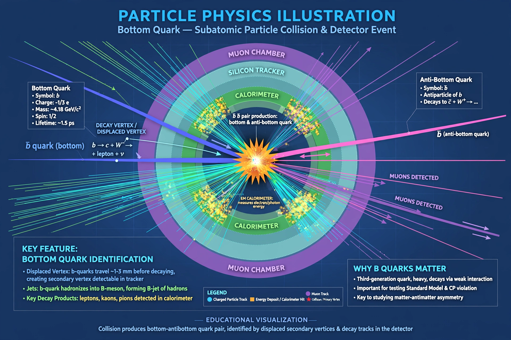

The bottom quark (symbol b), also called beauty quark, is a third-generation elementary particle in the Standard Model, with charge −1/3 e and mass about 4.18 GeV/c².
| Bottom quark | |
|---|---|
 | |
| Generation | Third |
| Charge | −1/3 e |
| Discovered | Fermilab, 1977 (Leon Lederman team) |
It was discovered in 1977 via the Upsilon (Υ) meson, a bottom–antibottom bound state. Bottom quarks are produced at colliders and decay mainly to charm or up quarks via the weak interaction. B mesons containing a bottom quark are key for studying CP violation at experiments such as BaBar, Belle and LHCb.